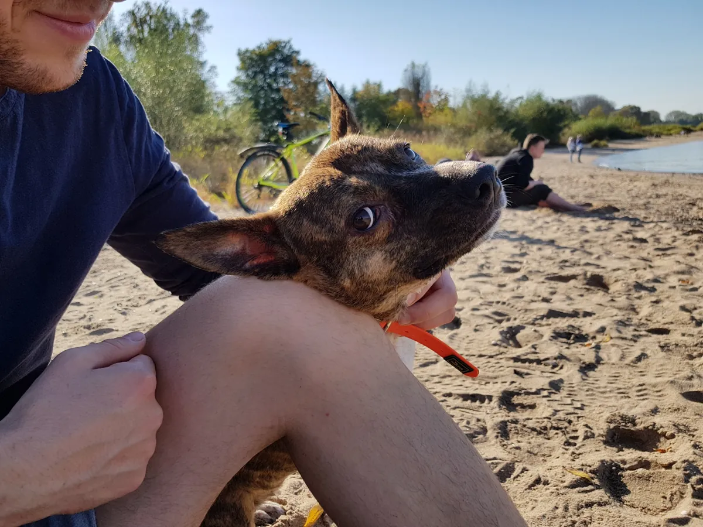

05 / Projektinformationen
Impressum
Ein persönliches Projekt. Offen und unabhängig.

Anbieter und Kontakt
Benjamin Bennewitz
c/o
Linzer Straße 45
53604 Bad Honnef
Deutschland
E-Mail: kontakt@design-code-repeat.de
Telefon: +49 162
9038166
Über dieses Projekt
Die NRW Sachkundeprüfung Lernhilfe ist ein unabhängiges, kostenlos zugängliches Lernangebot. Sie wird nicht von einer Behörde oder Tierärztekammer betrieben. Der Trainer erteilt keinen Sachkundenachweis und ersetzt keine Prüfung oder behördliche Auskunft.
Fragen und Lösungen basieren auf den unter Quellen beschriebenen Unterlagen. Eigene unverbindliche Beispielfragen sind gesondert gekennzeichnet. Verbindlich sind die Vorgaben der zuständigen Stelle. Hinweise auf Übertragungsfehler nehmen wir über die angegebene Kontaktadresse entgegen.
Freiwillige Unterstützung
Die Nutzung bleibt kostenlos. Eine freiwillige Unterstützung über einen externen PayPal-Link ist keine Voraussetzung für die Nutzung und begründet keinen Anspruch auf zusätzliche Leistungen. Es wird keine Spendenbescheinigung ausgestellt.
Hinweise zu Inhalten und Haftung
Keine Rechtsberatung, keine behördliche Auskunft und keine Garantie für das Bestehen einer Prüfung. Die Texte und Fragen dienen ausschließlich dem Lernen und der allgemeinen Orientierung. Für Richtigkeit, Vollständigkeit und Aktualität wird keine Gewähr übernommen. Insbesondere können ältere Originalfragen vom aktuellen Recht oder heutigen fachlichen Empfehlungen abweichen.
Soweit gesetzlich zulässig, ist eine Haftung für Schäden durch die Nutzung der unentgeltlichen Lerninhalte ausgeschlossen. Unberührt bleiben gesetzlich zwingende Ansprüche, insbesondere wegen Vorsatzes, grober Fahrlässigkeit sowie wegen Verletzung von Leben, Körper oder Gesundheit. Dieser Hinweis hebt gesetzliche Verantwortlichkeiten nicht auf.
Eine pauschale Distanzierung von verlinkten Inhalten ersetzt keine gesetzliche Pflicht. Bei konkreten Hinweisen auf Rechtsverletzungen oder Übertragungsfehler werden die betroffenen Inhalte geprüft und erforderlichenfalls berichtigt oder entfernt.